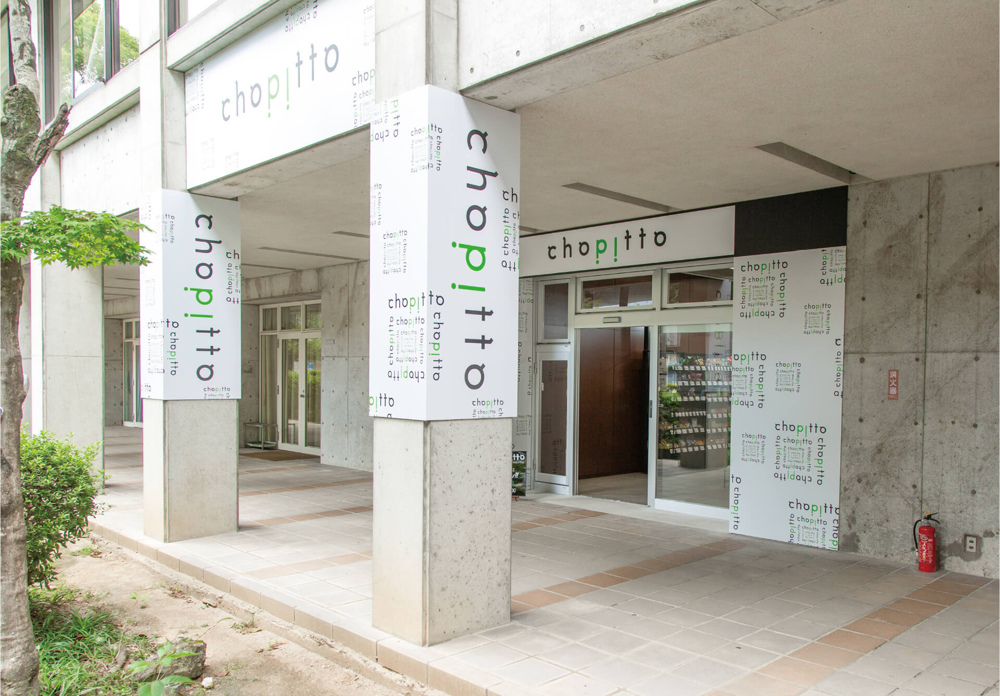
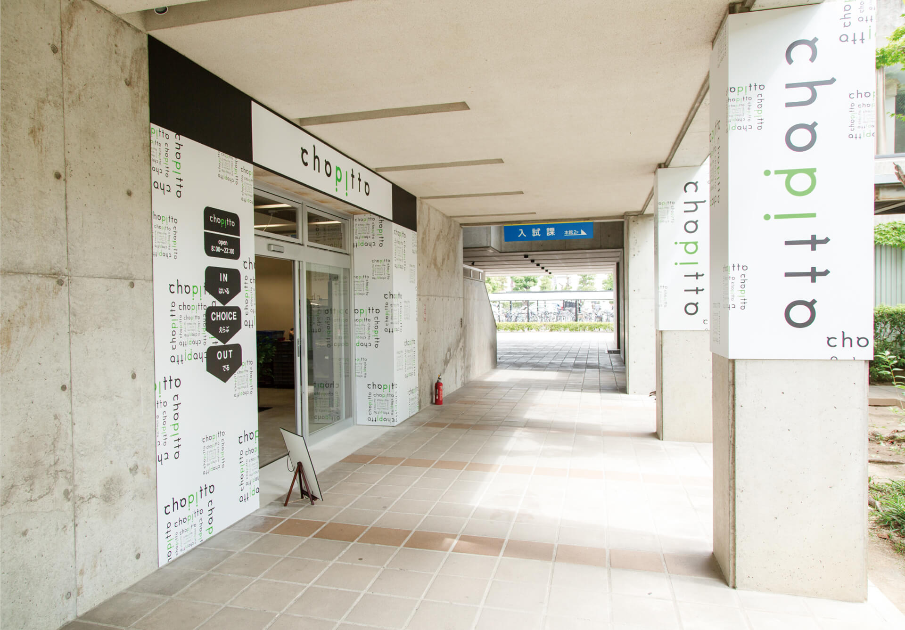
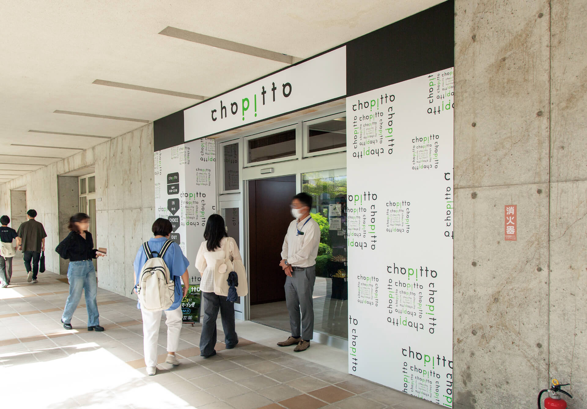
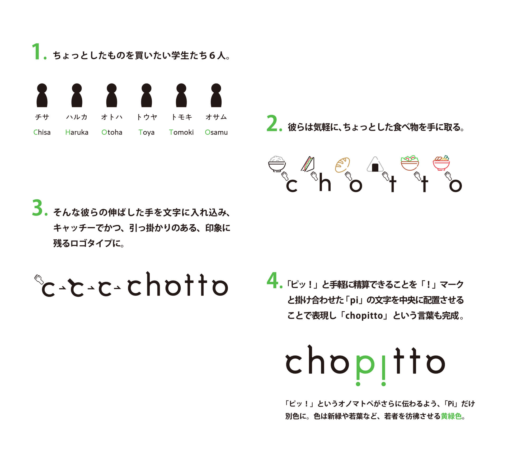
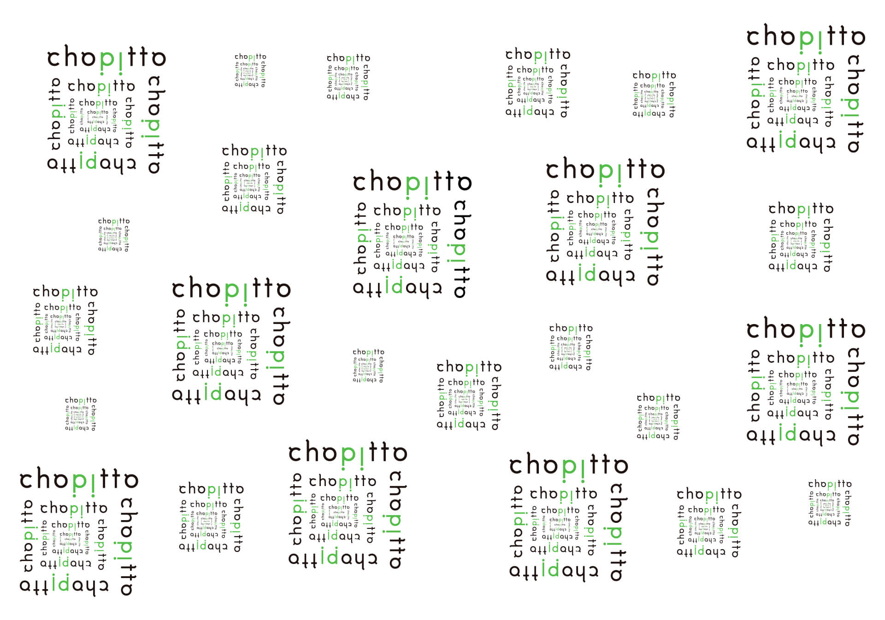
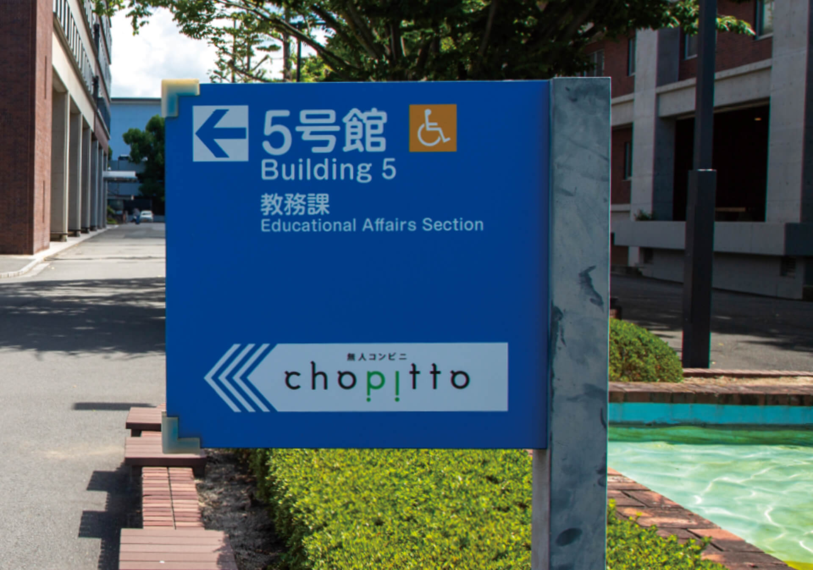
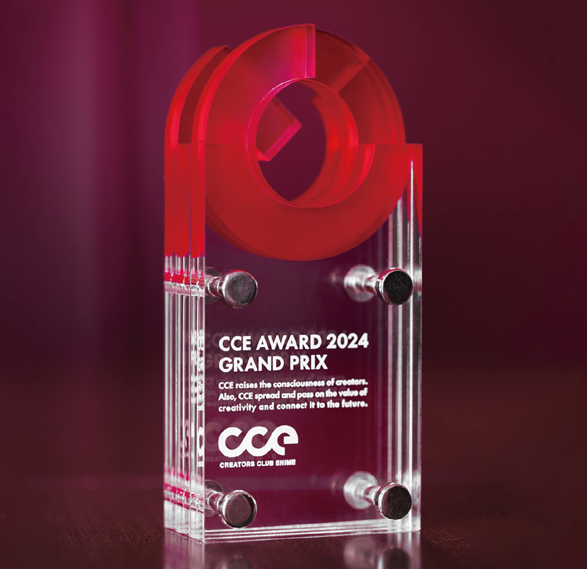
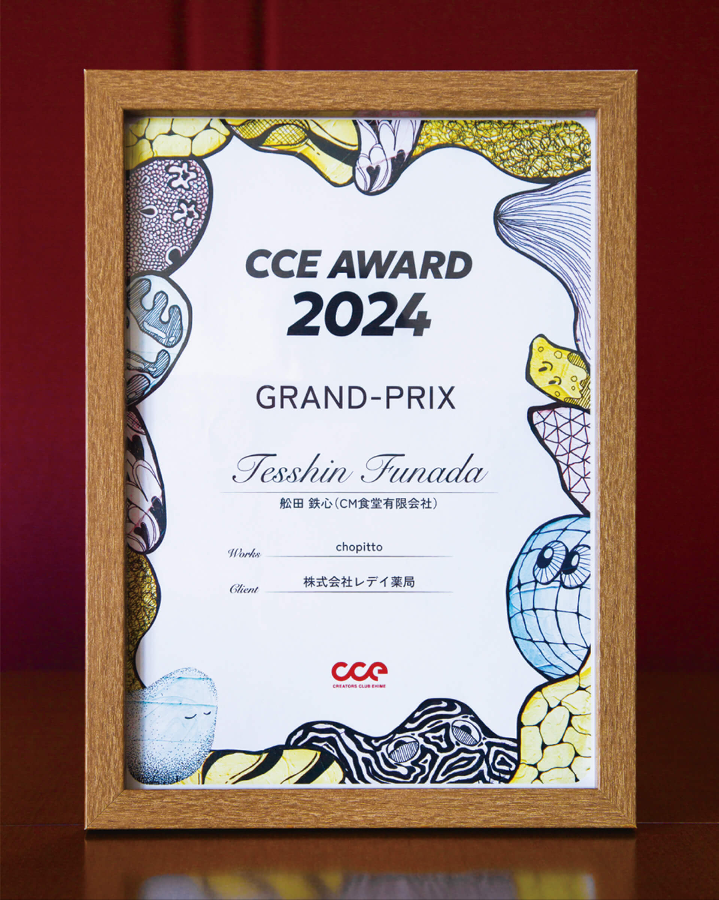

松山大学構内に開店した､四国初となる無人コンビニ「chopitto（チョピット）」のロゴ､ファサードデザインを担当した。




店内には多種多様な商品が陳列されており､手に取るだけで店内のカメラが情報をキャッチ｡レジ前に立てばチョイスした商品リストと値段が即座に表示され､スマホで「ピッ！」とスマートに決済できる。
先進的な無人コンビニにふさわしいスタイリッシュさ､そして誰でも気軽に利用できるような親しみやすさと軽やかさのあるデザインを意識した。

ロゴマーク


ファサード紋様
ロゴマークを展開させ､ファサード用の紋様とした｡通行人の目を惹くようなインパクトのあるデザインを意識した｡

サイン
大学構内の大通りにある看板に設置したシールタイプのサイン。既存のサインと差別化できるよう、特徴的なサインを目指した。

CCE AWARD 2024 グランプリ受賞
愛媛県内最大級のクリエイター団体「クリエイターズクラブ愛媛（CCE）」で毎年主催されているアワード「CCE AWARD」にて2024年度のグランプリを受賞した。
